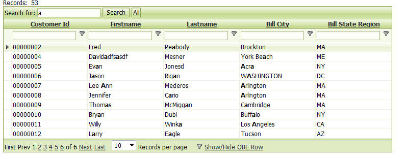
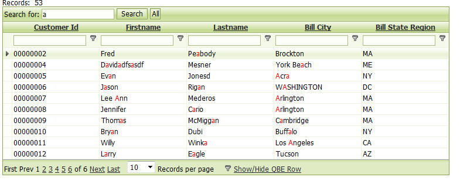

Search Highlighting
When you search the Grid (using a Search part, a Quick Search, or a QBE search), you can highlight the search terms in the Grid and Detail View to make it clear why a record was included in the found set.In the screenshot below, the user has done a Quick Search for all records where the Firstname, Lastname, or Bill_City contain the letter 'a'. The 'a's in these fields in the selected records as shown in bold.
The CSS style sheet files have new class called <style_name>SearchHighlight (e.g. GlassBlueSearchHighlight) that is used to highlight the search text. If you are using a modified CSS style sheet, be sure to add this new class to your stylesheet.

In the following image, the definition for the <search_name>SearchHightlight class has been changed to show the search terms in red, making the effect a little easier to see.

Watch Video
Wildcard searches are supported. If you have search highlighting turned on and you perform a wildcard search (for example, you enter "alpha*ware", the search will find records that contain "Alpha Software" and "Alpha Hardware". The search highlighting will highlight both the 'Alpha' and the 'ware' in the found records.